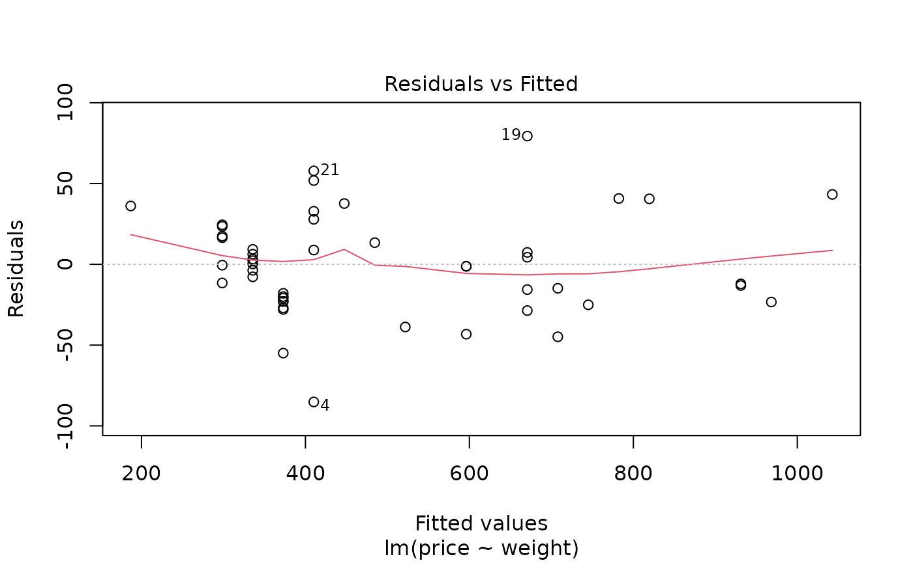
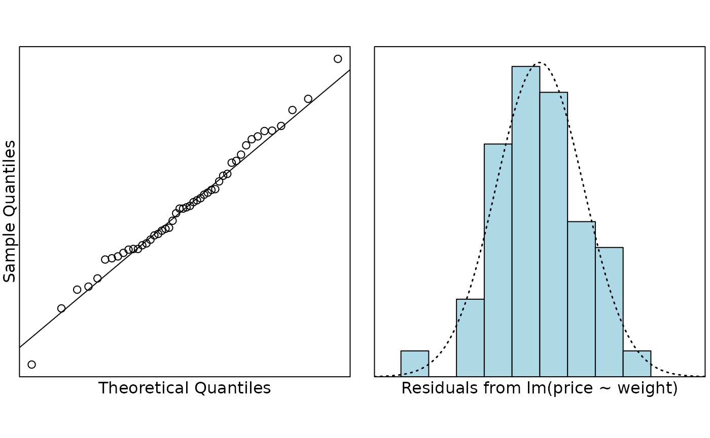

Problem
This data set contains the prices of ladies’ diamond rings and the carat size of their diamond stones from a random sample of rings from Singaporean retailers. The rings are made of 20 carat gold and are each mounted with a single diamond stone. The data was collected by a lecturer quite a few years ago when they were in Singapore and they were interested in building a model to explain the price of diamond rings.
In particular, it was hoped that the prices of two rings could be predicted using the model: a 0.3-carat diamond ring and a 1.2-carat diamond ring.
The variables measured were:
-
price: price of ring (in Singapore dollars) -
weight: weight of diamond (in carats)
Question of interest/goal of the study
We were interested in building a model to explain the price of diamond rings. In particular, we want to predict the price of a 0.3-carat diamond ring and a 1.2-carat diamond ring.
Read in and inspect the data:
# import the data
diamonds.df = read.table("diamonds.txt", header = TRUE)
head(diamonds.df)
plot(price ~ weight, main = "Price versus weight of diamonds", data = diamonds.df)## weight price
## 1 0.17 355
## 2 0.16 328
## 3 0.17 350
## 4 0.18 325
## 5 0.25 642
## 6 0.16 342Comment on the plot
The scatter plot of price versus weight shows a strong, increasing, linear relationship. The greater the weight of the diamond, the greater the mean price of the diamond ring.
Fit model and check assumptions
# fit the model
diamond.fit <- lm(price ~ weight, data = diamonds.df)
# Assumption checks
plot(diamond.fit, which = 1)
normcheck(diamond.fit)
cooks20x(diamond.fit)
# Get summary output and confidence intervals
summary(diamond.fit)##
## Call:
## lm(formula = price ~ weight, data = diamonds.df)
##
## Residuals:
## Min 1Q Median 3Q Max
## -85.159 -21.448 -0.869 18.972 79.370
##
## Coefficients:
## Estimate Std. Error t value Pr(>|t|)
## (Intercept) -259.63 17.32 -14.99 <2e-16 ***
## weight 3721.02 81.79 45.50 <2e-16 ***
## ---
## Signif. codes: 0 '***' 0.001 '**' 0.01 '*' 0.05 '.' 0.1 ' ' 1
##
## Residual standard error: 31.84 on 46 degrees of freedom
## Multiple R-squared: 0.9783, Adjusted R-squared: 0.9778
## F-statistic: 2070 on 1 and 46 DF, p-value: < 2.2e-16
confint(diamond.fit)## 2.5 % 97.5 %
## (Intercept) -294.487 -224.7649
## weight 3556.398 3885.6513Get additional predicted output required
predweight.df = data.frame(weight = c(0.3, 1.2))
predict(diamond.fit, predweight.df, interval = "prediction")## fit lwr upr
## 1 856.6815 790.0316 923.3315
## 2 4205.6039 4029.3376 4381.8702Method and Assumption Checks
A scatter plot of price vs diamond weight showed a linear association with approximately constant scatter and so a simple linear regression model was fitted.
All the assumptions were met so we have no problems with the analysis.
Our final model is where .
Our model explains 98% of the variation in diamond ring prices.
Executive Summary
We have data on diamond ring prices and the weights of the diamonds in those rings from Singapore retailers. Our aim is to predict the price of a diamond ring using the weight of the diamond.
There is a strong positive association between the weight of the diamond and the price of the ring - the bigger the diamond, the higher the price of the diamond ring.
We estimate that for every 0.1-carat increase in the weight of the diamond, the mean diamond ring price increases by somewhere between $360 to $390.
Our model explains 98% of the variation in diamond ring prices and therefore should be excellent for predicting the price of diamond rings.
Using our model, we predict that the 0.3-carat diamond ring will be priced between $790 to $920.
Our data only has diamond rings weighing up to 0.35 carats, so we cannot rely on the predictions for the 1.2-carat ring.
[Note: the range of the orignal data was around 900 dollars, this has been reduced to around 130 dollars which is roughly 15% of this and much more useful for prediction.]